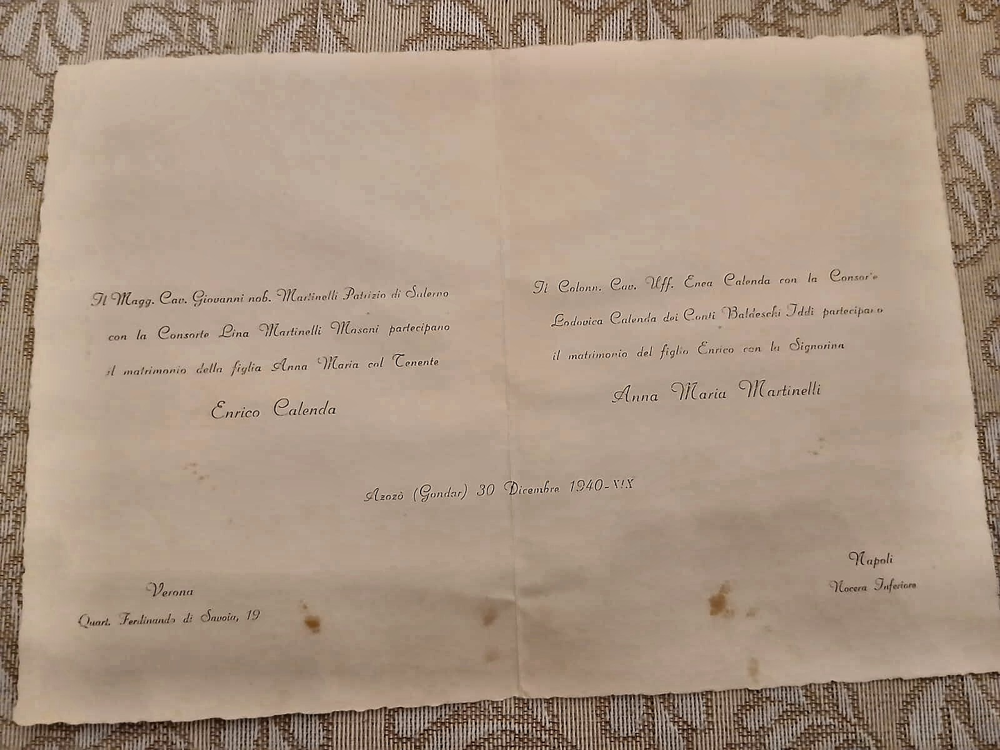

Il documento
Le famiglie di Giovanni Martinelli e Lina Masoni, genitori di Anna Maria, e di Enea Calenda e Lodovica Calenda, genitori di Enrico, partecipano il matrimonio dei figli. Il testo indica per lo sposo il grado di tenente e per Giovanni Martinelli il titolo di patrizio di Salerno.
In fondo al documento compaiono la località Azozò (Gondar) e la data 30 dicembre 1940 – XIX, oltre agli indirizzi delle famiglie a Verona e nel Napoletano.
Questa data è quella stampata sull’annuncio: il documento, da solo, non permette di stabilire con certezza il giorno della celebrazione.
Confronta con la fotografia originale · Vedi le fotografie dei matrimoni e del soggiorno in Africa